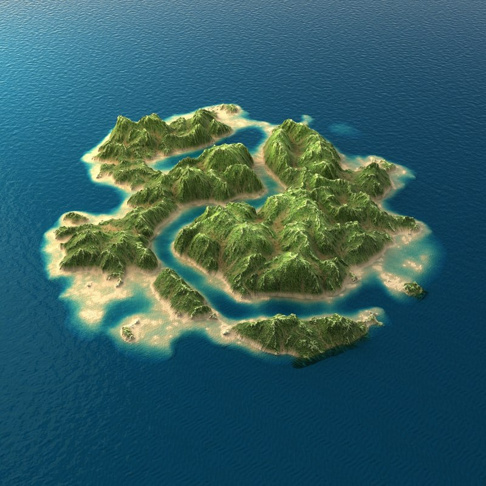
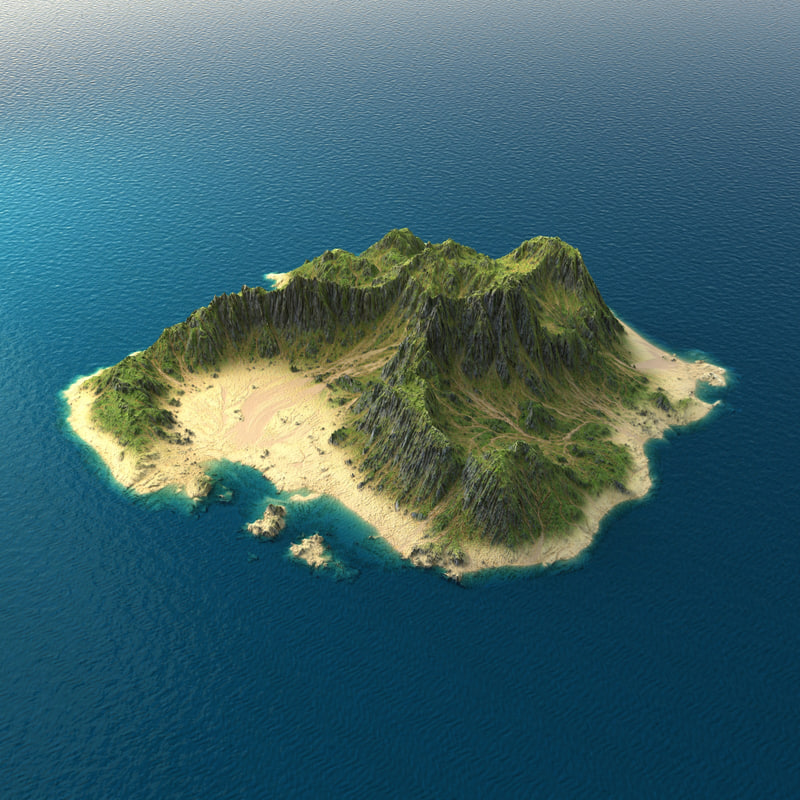

Title: Procedural Terrain Generator
Summary: The aim of this project is to create a realistic terrain generator, which will create a randomly-generated, 3D landscape terrain. In the process, we will also account for rendering of textures such as water, sand, stone, vegetation, etc.
Members: Fangyu Wu (3034337466), Fonda Xu (26133804), Xiaoyun Zhao (3034340248)
In this project, we aim to create and render a 3D model of a random small island with natural geographical formations, photorealistic terran textures, and additional believable features.
Our project is inspired by popular procedurally generated video games like No Man's Sky and Minecraft. In those games, the player can explore a practically inifintely large universe, where the surrounding world is generated and rendered in real time as players visit it. We find this idea both intellecturally challenging and artistically interesting, so we would like to propose it as our final project.
Based on our preliminary studies, we find two problems in our project are particularly challenging. The first challenge is to procedurally generate random mesh and textures that, when combined, assemble the appearance of a believeable island. To this end, we will start with a standard game development solution described in [1] and build up on it as we progress. The second challenge is to render the generated textures on the mesh in a photorealistic way. We have not yet decided exactly how to achieve this but we find texture synthesis seems to be very promising [2]. Finally, as the project is relatively large, we would like to use Uniy as the framework for development [3]. For optional additional deliverables, we may explore tools like Blender to build models for trees, buildings, and animals.
Our goal in this project is to create a terrain generator such that the resulting terrain appears as realistic as possible. For reference, we would imagine our ideal results to appear to be something along the lines of:
|

|

|
It's difficult to specify the parameters of how we will be measuring quality/performance, since our primary goal is, essentially, photorealism. That being said, we will constantly be researching for ways to make our terrain appear more compelling. (Ex. Random placement of trees should be clustered, as they usually are in the real world.) We will also likely be comparing our renderings against photographs of their actual, real-world counterparts to discover shortcomings in our implementations and achieve greater accuracy.
Baseline Plan:
Basic Terrain Creation: We want to have a functional terrain generator, which will require writing algorithms for:
Basic Texture Creation: Now, we want to add some texture to our terrain.
Basic Assets: Place additional assets into the terrain.
Aspirational Plan:
Assuming that we've successfully completed our baseline plan, we would also like to implement the following:
Additional Assets: Having finished a basic, textured terrain, we would now like to implement other assets to our terrain so that it appears more realistic.
Additional Physics: Time allowing, we would also like to implement physics and/or other phenomenon(s) into our terrain. (Ex. Adding wind, wave, rain, snow, etc.)